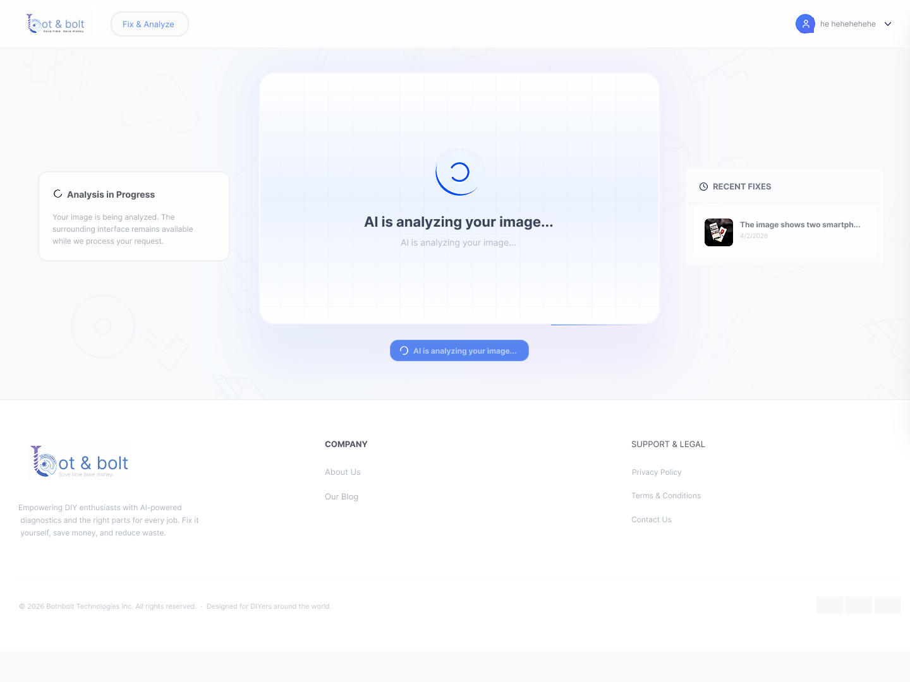
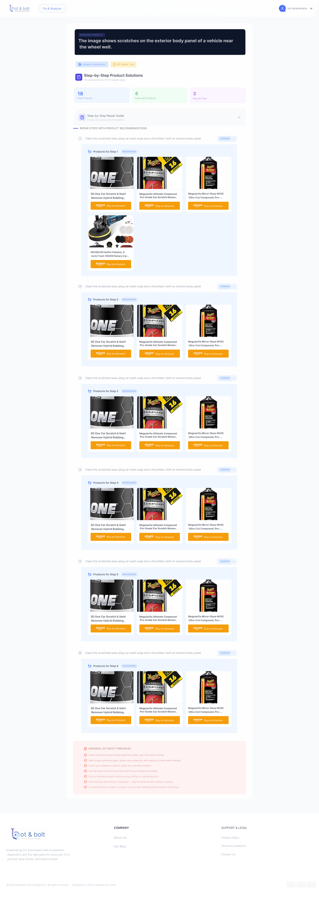

BotNBolt is a high-volume B2B and D2C marketplace specializing in industrial fasteners, robotics hardware assemblies, and custom machining components. The platform serves professional engineers, hobbyist makers, and corporate procurement officers globally.
We were tasked with designing a digital flagship marketplace that organizes dense specification lists into clean search parameters and streamlines bulk checkout transactions. The goal was to build a system that combines industrial engineering precision with modern, friction-free transactional flows.
Structuring highly technical hardware parameters and bulk procurement orders into a visual interface presented significant barriers:
- Dense Technical Catalogs: Displaying multi-variant attributes (thread Pitch, material grade, torque ratings) without cluttering product pages.
- High Cart Abandonment: The legacy B2B order process required a tedious 6-step form, causing high drop-off rates for corporate card purchasers.
- Disjointed Search Discovery: Users struggled to filter between precision robotics accessories and basic hardware, leading to search drop-off.
- Mobile Ordering Barriers: Over 60% of buyers explore inventories or check delivery trackers on mobile screens, but variant grids were non-responsive.
We conducted qualitative interviews with procurement managers and mechanical engineers to discover friction nodes. Participants highlighted that lacking dimensional drawings and simple bulk quantity inputs were their main drop-off triggers.
Parallelly, we performed a Jakob Nielsen heuristic audit of legacy industrial suppliers. The analysis demonstrated that convoluted checkout forms and poorly structured table columns were the primary contributors to drop-off.
Key Discovery Takeaways
- Dimensional Transparency: Showcase specifications, technical diagrams, and material certificates upfront.
- Bulk Purchase Shortcuts: Allow users to add varying quantities to their cart directly from catalog grids.
- Express 3-Step Checkout: Structure visual checkout steppers to expedite corporate card authorizations.
- Fluid Specifications Matrices: Re-arrange variant grid columns to adapt cleanly across mobile viewports.

We formulated an information architecture that bridges engineering utility with transaction conversion. We defined five core visual and structural guidelines:
- Industrial Charcoal & Amber Visual Guidelines: Establishing visual systems combining industrial dark charcoal bases, high-contrast gold/amber accents, and silver grid lines.
- Structured Vehicle Lineup Navigation: Segmenting the inventory cleanly into Robotics, Fasteners, Tools, and Automation components.
- 3-Step Express Checkout Funnel: Condensing B2B verification inputs into a fast, 3-step billing and shipping checkout panel.
- Direct Quantity Steppers: Placing instant numeric steppers directly on catalog rows to bypass details page loads.
- Mobile Responsive Grids: Designing specification tables to stack and collapse fluidly on smaller screens.
We designed an engineered visual language, pairing Cormorant Garamond serif headings for classic hardware craft, combined with Space Grotesk labels for precise, technical readability.
We mapped user dashboards, bulk procurement tables, and checkout confirmation sequences in low-fidelity wireframes before building high-fidelity visual showroom mockups.
We subjected our high-fidelity prototypes to usability testing rounds with mechanical engineers and procurement officers:
- Specification Overload: Users found comparing thread variants complex. We introduced variant chip selections to filter specification grids.
- Bulk Cart Friction: Reviewing large orders was taxing. We re-arranged cart drawers to show bulk pricing tiers dynamically.
- Checkout Fatigue: Mandatory corporate login was high friction. We integrated guest checkouts and saved corporate card billing profiles.
Streamlined Homepage Discovery
We redesigned the home page landing experience to serve as a visual entryway. Prominent category links, custom graphics, and a global search bar enable procurement officers to locate specific components instantly.

Structured Product Catalogs
Fastener specifications, dimensional blueprints, and thread standards are housed inside simple tabular sheets. Variant parameters align side-by-side to accelerate engineering selections.

Procurement Lead Analysis
We mapped visual purchase trackers, transaction summaries, and audit logs to help corporate clients monitor their ordering patterns and streamline bulk acquisitions.
Conclusion
By modernizing a legacy B2B ordering catalog into a frictionless, responsive industrial marketplace, we successfully optimized purchase rates. Restructuring specifications tables and reducing checkout steps created an efficient procurement environment.
What did we achieve from the project?
The industrial redesign delivered immediate performance and conversion upgrades:
- +38% Checkout Conversion Rate Reducing the purchase process from 6 steps to 3 quick panels significantly cut corporate card drop-offs.
- +30% Average Order Value (AOV) Exposing bulk pricing tiers directly inside the cart motivatd buyers to purchase larger hardware volumes.
- -40% Search Drop-offs A global search bar paired with category tabs resolved major inventory exploration barriers.